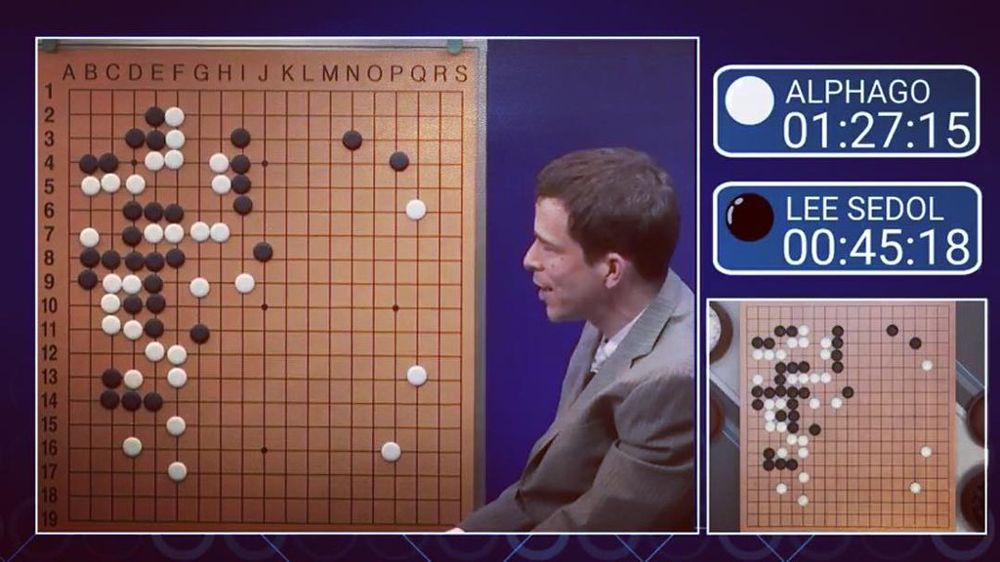

O co chodzi
Marzec 2016, Seul. Lee Sedol — jeden z najlepszych graczy Go na świecie — siada do pięciu partii z programem, którego rok wcześniej jeszcze nie było. Go uchodziło za ostatnią wielką grę planszową, w której człowiek wciąż był lepszy od maszyny: za dużo możliwości, za dużo intuicji, żeby komputer to ogarnął. Dokument AlphaGo (2017, reż. Greg Kohs) opowiada tę historię tak, że ogląda się ją jak thriller — mimo że wynik można sprawdzić w jedną chwilę. Recenzenci dają mu komplet punktów.
Cały świat patrzył
To nie było wydarzenie dla garstki informatyków. W Korei Go (tamtejsze baduk) to nie nisza — gra regularnie kilka do kilkunastu procent ludzi, są całodobowe kanały telewizyjne poświęcone tylko tej grze, a najlepsi gracze to zawodowcy i gwiazdy. Wyobraź sobie skoki narciarskie albo mecz reprezentacji: cały kraj przy ekranach. Lee Sedol był narodowym bohaterem, a jego pojedynek z maszyną śledziła cała Azja i pół świata.
Ponad 200 milionów ludzi oglądało ten mecz na żywo — pięć razy więcej, niż liczy cała Polska.

Ruch 37
W drugiej partii AlphaGo zagrało posunięcie, którego nie zagrałby żaden człowiek. Komentatorzy najpierw wzięli je za pomyłkę — nawet inżynierowie, którzy napisali program, myśleli, że coś się zepsuło. Kilkadziesiąt ruchów później okazało się genialne. Maszyna pokazała ludziom coś nowego w grze, w którą grają od 2500 lat. To moment, w którym po plecach przechodzi dreszcz.
Ruch 78
A jednak to nie jest opowieść o maszynie, która miażdży człowieka. W czwartej partii Lee Sedol odpowiedział ruchem 78 — nazwanym potem „boskim ruchem". AlphaGo go nie przewidziało, straciło grunt i tę partię przegrało. Jedno zwycięstwo człowieka w całym meczu — i od razu legenda.

Skąd się to wzięło — DeepMind i Google
Za AlphaGo stała mała londyńska firma DeepMind. Założył ją w 2010 roku Demis Hassabis — w dzieciństwie cudowne dziecko szachów, później neurobiolog — z brzmiącym jak science fiction celem: „rozwiązać inteligencję". W 2014 roku Google kupił ten kilkuletni startup za około pół miliarda dolarów. AlphaGo było dowodem, że pomysł działa.
I na grze się nie skończyło. Ten sam zespół zbudował potem AlphaFold, który rozwiązał 50-letni problem biologii — przewidywanie kształtu białek — a w 2024 roku Hassabis dostał za to Nagrodę Nobla z chemii. Rewolucja AI, o której dziś słyszysz zewsząd, w dużej mierze zaczęła się właśnie tu: od programu, który nauczył się starożytnej gry planszowej. Bo gry uczą myśleć — a czasem to myślenie zmienia świat.
To nie jest film o Go
Nie musisz znać zasad, żeby dać się wciągnąć. Prawdziwym tematem filmu nie jest sztuczna inteligencja, tylko człowiek — Lee Sedol — który na oczach całego świata mierzy się z czymś, z czym nikt przed nim się nie mierzył, i to, jak to udźwiga. Obok niego zdenerwowany zespół DeepMind za ekranami. Jest w tym napięcie, duma, pokora i zaskakująco dużo emocji. Nawet jeśli nigdy nie postawiłeś kamienia na planszy, to poczujesz.

Gdzie obejrzeć
Około 90 minut, za darmo na YouTube. Obejrzyj — a potem przyjdź zagrać z nami na prawdziwej planszy, drewnem i kamieniami.
Tekst własny klubu, na podstawie faktów o dokumencie AlphaGo (2017, reż. Greg Kohs; DeepMind). Zdjęcia z Wikimedia Commons: plansza „boskiego ruchu" autorstwa Axd (CC BY-SA 4.0, wykadrowana na baner); portret Lee Sedola — LG Electronics / fot. HJK (CC BY 2.0); portret Demisa Hassabisa — The Royal Society / fot. Duncan Hull (CC BY-SA 4.0); kadr z transmisji meczu — fot. Buster Benson (CC BY-SA 2.0). Zwiastun: DeepMind / AlphaGo (YouTube).